Le défilé de Joucou est une gorges étroite de 500 m environ dans laquelle un passage a été creusé en 1867 sur la rive gauche pour élargir la route précédente qui passait rive droite. Ce choix a permis de réaliser un exploit technologique par le percement de 3 tunnels et autres, sans toucher au pont romain qui se trouve en amont des gorges et permettait initialement de traverser le Rébenty avant cette difficulté. Voir la randonnée Joucou / pont romain suivant le Rébenty en rive gauche qui me laisse dubitatif quand à la nécessité de forcer ce passage par la roche, car sur le plan en tout cas les 2 choix ne me semblent pas guère différents en kilomètre, peut-être en dénivelé ?

Entrée des gorges

Petite usine Hydroélectrique, la prise d'eau est à la sortie des gorges
Vers le premier des 3 tunnels
Premier tunnel
Plaque commémorative sur le premier tunnel, "Ce chemin a été construit en 1867 sous l'administration de M. MAGNIEN Préfet de l'Aude et sous la direction de MM. MALRIC agent-voyer en chef de l'Aude, Louis FAGES agent-voyer de l'arrondissement de Limoux et VAQUIER agent-voyer conducteur. CAISSAC entrepreneur
Vers le deuxième tunnel


Avant le deuxième tunnel, falaise trouée par ce tunnel

Les deuxième et troisième tunnels

Le troisième tunnel

Plaque commémorative du nettoyage du défilé par le club spéléo de l'Aude en 2002,
placée entre les 2 et 3ème tunnel
falaise du troisième tunnel

Troisième tunnel


Après le troisième tunnel

"Pont romain" vu de dessus à la sortie du défilé, passage de la route avant le percement du défilé
Passage interdit sur le "Pont romain", un des côtés s'étant écroulé

Plan des chemins de randonnées de l'autre côté du pont romain

les ruines du chateau d'Able, surveillant le pont depuis le haut de la rive gauche

Vue du troisième tunnel depuis la rive droite du Rébenty


Pont romain vue du Rébenty


Barrage sur le Rébenty pour prise d'eau pour l'usine en entrée des gorges
Au delà du barrage sur le Rébenty

Entrée des gorges


Route avant le premier tunnel


premier et deuxième tunnels


sortie du deuxième tunnel


vers le troisième tunnel
500 mètres en amont, un petit défilé d'environ 200 mètres a, à nouveau, nécessité de creuser la roche pour pouvoir faire passer la route menant vers Belfort sur Rébenty. Ce défilé a pris le nom du château vu plus haut, bien que depuis le château il ne me semble pas qu'on puisse apercevoir ce dit défilé...


Ce pic rocheux de 888 mètres avec cet étrange aplomb convexe est en bord de Rébenty. il est le point de repère séparant les communes de Niort-de-Sault, Mazuby et Espezel. Les 2 photos qui suivent ont été malheureusement prises de trop près et donc ne font pas idéalement ressortir la particularité étonnante de ce pic.

Sur les cartes postales anciennes ce rocher est appelé le "Rocher de Louis XIV"

Carte postale de la collection de Thierry Meynier
De l'usine hydroélectriques en aval du défilé jusqu'à Niort-de-Sault


Ce défilé entre La Fajolle et Mérial peut être considéré comme le début des gorges du rébenty


Sur les cartes postales anciennes de Labouche & Frères ce défilé est appelé gorges d'Abdoutchis (prononciation en occitan proche de Adouxès)

Carte postale de la collection de Thierry Meynier
Ce paragraphe est un peu hors sujet, mais les photos prises lors de balades le long des gorges sont positionnées ici en attendant une éventuelle page plus explicite
Les villages de l'amont du Rébenty vers l'aval


La Fajolle, dernier village sur la route du col du Pradel qui sépare le département de l'Aude de l'Ariège, a plusieurs particularités qui en font un village charmant


Tour Wisigothe Espezel vue aval depuis RD 107

Retour d'un chemin rose..., celui allant à la tour wisigothe (constaté en y arrivant...)
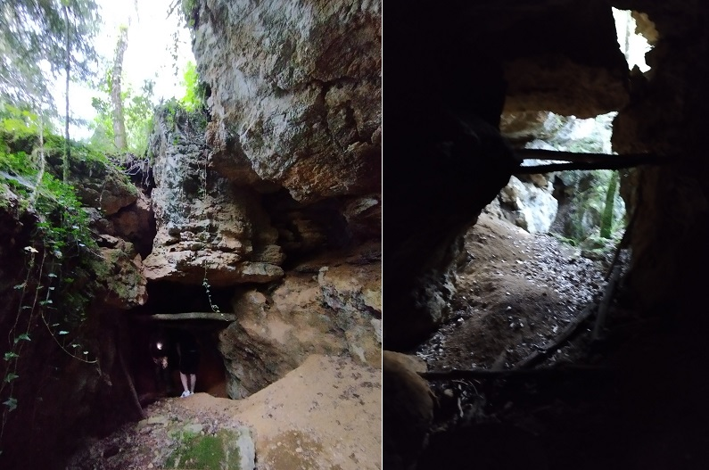Cavité de fouille (?) en dessous de la tour
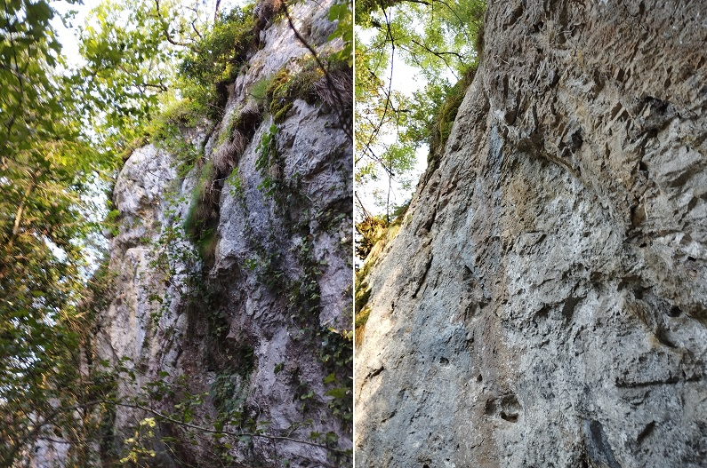Falaise soutenant la tour
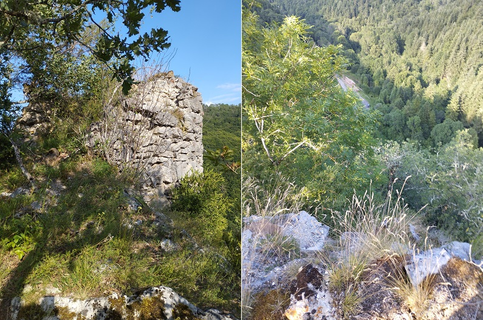La Tour Wisigothe d'Espezel et Vue vers l'aval depuis la tour (tient, on voit ma voiture...)
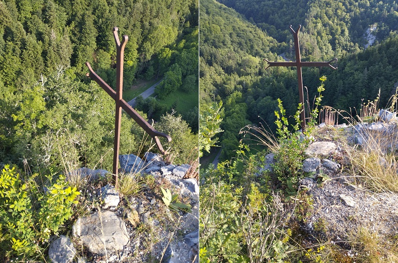Vue vers l'amont depuis la tour
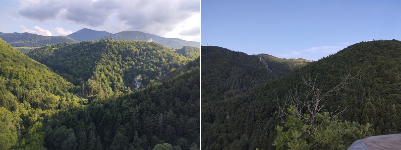Paysage depuis la tour
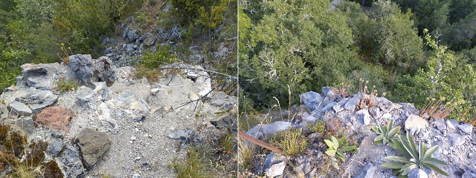Vue de la falaise depuis la tour
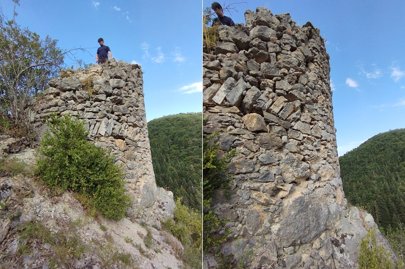La Tour Wisigothe Espezel
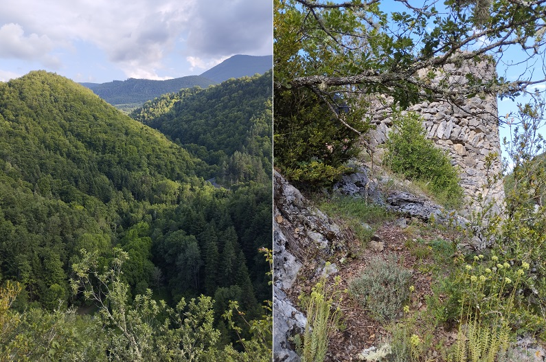Paysage et tour
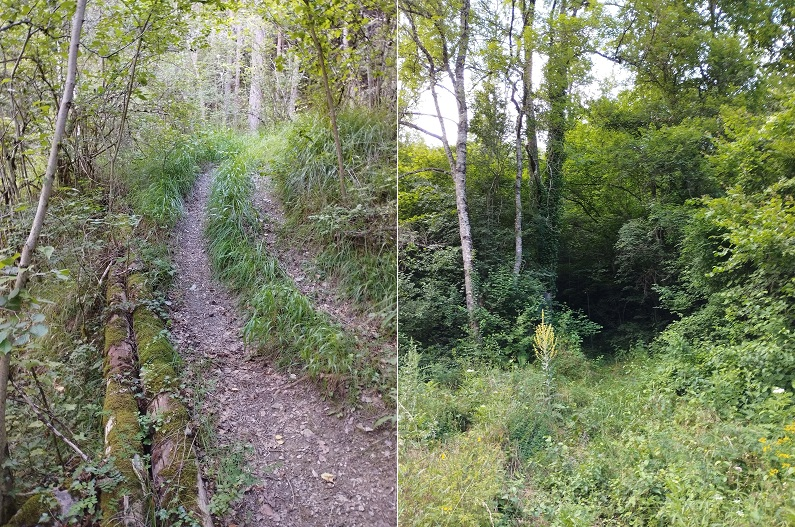Le chemin passant à coté de la tour (en redescendant et entrée depuis la RD 107), marqué rose
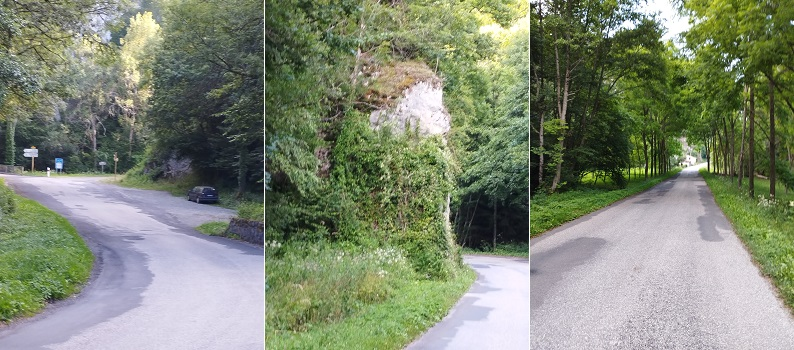La RD 107 autour de la sortie du chemin (vue vers l'amont, vue vers l'aval, vue aval vers le moulin du Roc
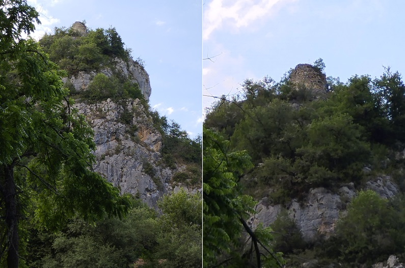Tour Wisigothe Espezel vue amont depuis RD 107
Moulin du Roc d'Espezel et tour Wisigothe au dessus du roc
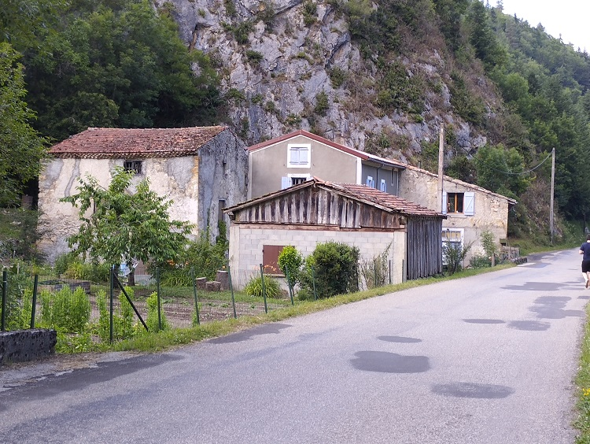 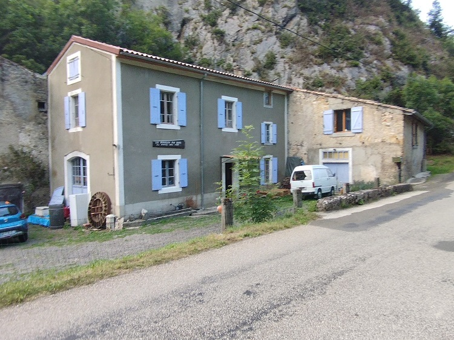Moulin du Roc d'Espezel
La route d'Espezel partant de la RD 107
Le site suivant donne un historique du moulin du roc avec plein de photos de l'intérieur

Village de Joucou


Abbaye de Joucou
Voir la page sur le sentier Cathare
Remarquer les strates rocheuses fines, qui ont la même déclivité que la pente de la montagne sur la rive gauche
Délibération des conseils municipaux sur l'utilité d'une route suivant le Rébenty
Contient également :